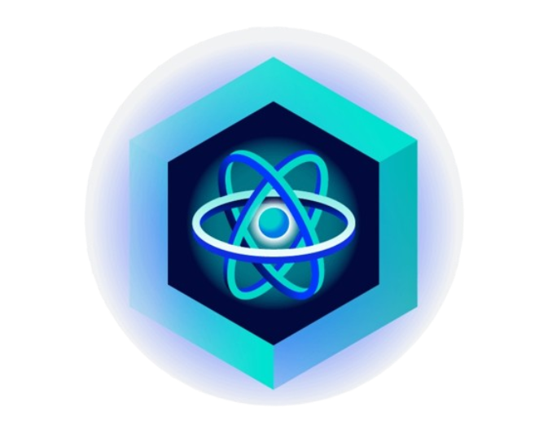
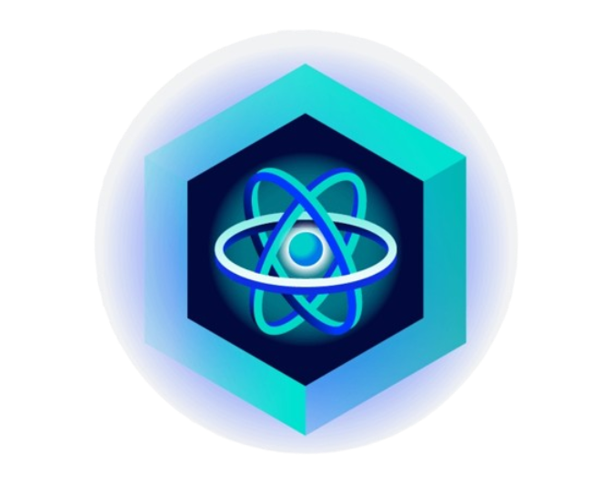

Portfolio
Hello!! i'm
sheik Abdulla
full stack developer
I'm a passionate Full Stack Web Developer with hands-on experience in building responsive web applications. As a fresher, I bring strong problem-solving skills, internship experience in real-time projects, and a continuous drive to learn and grow in modern technologies.I am eager to contribute to collaborative projects, grow within a professional environment, and leverage my technical skills to deliver innovative and reliable software solutions.


 
